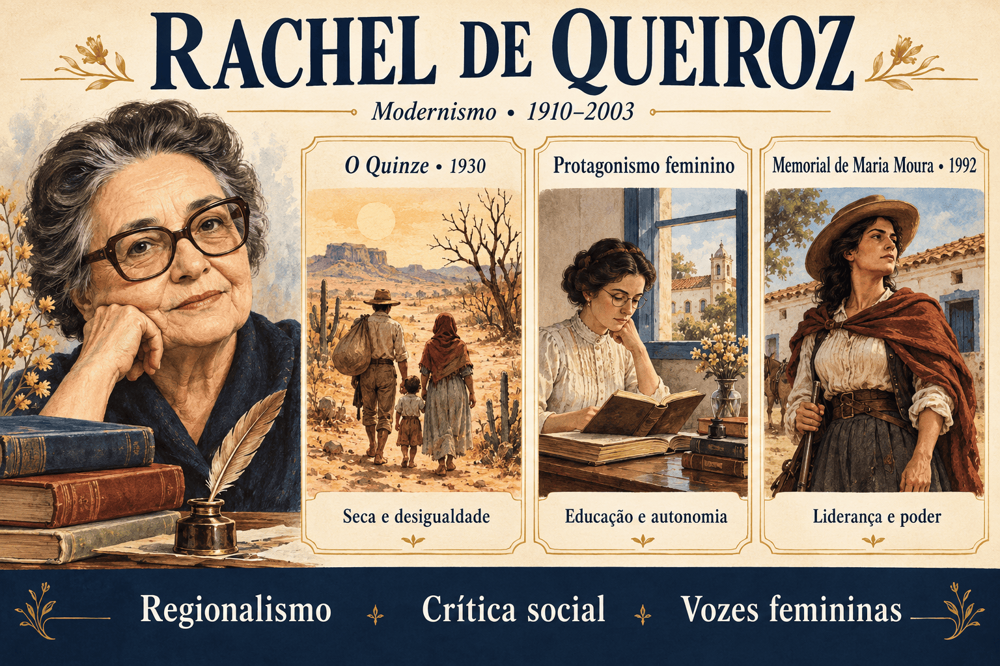

Rachel de Queiroz: biografia, O Quinze, características e protagonismo feminino
A seca pode atingir uma região inteira, mas seus efeitos não se distribuem igualmente. Quem possui terra, dinheiro e meios de transporte enfrenta condições diferentes daquelas de uma família obrigada a caminhar em busca de sobrevivência. Essa desigualdade atravessa O Quinze, romance que projetou Rachel de Queiroz na literatura brasileira.
Ligada ao Romance de 30, a escritora articulou questões sociais e conflitos individuais, dando destaque à migração, às relações de trabalho e à condição feminina. Sua produção se estende muito além da década de 1930, chegando a obras como Memorial de Maria Moura, publicado em 1992.
Neste conteúdo, você encontrará biografia, características literárias, análise das principais obras, comparação com outros projetos regionalistas e um quiz com gabarito comentado.

Rachel de Queiroz em resumo
- Nascimento: 17 de novembro de 1910, em Fortaleza, Ceará.
- Falecimento: 4 de novembro de 2003, no Rio de Janeiro.
- Atuação: romancista, cronista, jornalista, tradutora e dramaturga.
- Vinculação literária: segunda geração modernista e Romance de 30.
- Romance de estreia: O Quinze, de 1930.
- Temas recorrentes: desigualdade, migração, trabalho, autonomia feminina, relações familiares e poder.
- Estilo: prosa direta, diálogos expressivos, marcas de oralidade e articulação entre conflitos sociais e psicológicos.
- Reconhecimento: primeira mulher na Academia Brasileira de Letras, em 1977, e primeira mulher laureada com o Prêmio Camões, em 1993.
Quem foi Rachel de Queiroz?
Rachel de Queiroz nasceu em Fortaleza e manteve uma relação duradoura com o Ceará, sua cultura e seus espaços rurais. Formou-se no curso normal em 1925 e começou a atuar na imprensa ainda jovem, utilizando o pseudônimo Rita de Queluz.
Em 1930, antes de completar vinte anos, publicou O Quinze. A recepção do romance lhe deu projeção nacional e contribuiu para sua presença no conjunto de autores que renovaram a prosa brasileira.
A carreira da escritora também se desenvolveu em jornais e revistas, na tradução e no teatro. Sua atividade como cronista foi extensa, com textos voltados para acontecimentos, comportamentos e experiências do cotidiano.
Uma trajetória política com mudanças
Rachel participou da militância comunista na juventude, mas rompeu com o partido e, décadas depois, apoiou o golpe de 1964. Esse percurso exige cuidado: sua atuação política mudou ao longo do tempo e não deve ser apresentada como uma posição única e permanente.
Na leitura literária, também é necessário distinguir a autora das vozes de seus romances. Personagens e narradores são construções ficcionais, e suas falas não equivalem automaticamente a declarações pessoais da escritora.
O ingresso na Academia Brasileira de Letras
Rachel foi eleita para a Cadeira 5 da Academia Brasileira de Letras em 4 de agosto de 1977 e tomou posse em 4 de novembro do mesmo ano. Foi a primeira mulher a ingressar na instituição.
Uma distinção importante: Rachel foi pioneira na ABL e teve papel central no Romance de 30, mas a autoria feminina no Brasil começou muito antes dela. Seu reconhecimento deve ser situado em uma história que inclui outras escritoras e diferentes barreiras de acesso ao campo literário.
Rachel de Queiroz e a segunda geração modernista
A segunda geração modernista é convencionalmente situada entre 1930 e 1945. Na prosa, o período ganhou destaque pela investigação das relações sociais, das desigualdades regionais e dos conflitos psicológicos.
Rachel de Queiroz participa desse momento com romances que aproximam condições de vida e experiências individuais. A observação social não elimina a análise dos afetos: fome, trabalho, casamento, educação e desejo aparecem relacionados.
A expressão regionalismo crítico ajuda a compreender esse projeto. A região participa dos conflitos, em vez de funcionar apenas como uma paisagem pitoresca ou um conjunto de costumes.
Contextos que ajudam a compreender sua estreia
- As desigualdades do mundo rural: dependência econômica, precariedade do trabalho e acesso desigual à terra e aos recursos.
- As secas e os deslocamentos: experiências de migração e vulnerabilidade das populações pobres.
- Os debates dos anos 1930: disputas políticas e discussão sobre a organização da sociedade brasileira.
- As mudanças na condição feminina: ampliação do debate sobre educação, trabalho e participação das mulheres na vida pública.
Não confunda os tempos: O Quinze foi publicado em 1930, mas representa a seca de 1915. Já Memorial de Maria Moura foi publicado em 1992 e é ambientado no século XIX.
Características literárias de Rachel de Queiroz
1. Regionalismo e investigação social
Os espaços regionais permitem examinar relações de propriedade, trabalho, dependência e autoridade. A experiência do sertão ganha sentido pelas condições concretas em que as personagens vivem.
2. Prosa direta e expressiva
A escrita frequentemente evita a ornamentação excessiva e valoriza a clareza da cena. Essa economia não impede a presença de imagens, afetividade e elaboração psicológica.
3. Diálogo e oralidade
Modos de falar e escolhas vocabulares contribuem para caracterizar personagens e relações. A oralidade é trabalhada literariamente: o romance seleciona e organiza a fala para produzir efeitos de sentido.
4. Articulação entre sociedade e interioridade
Medo, desejo, frustração e esperança se desenvolvem em situações históricas e sociais determinadas. A análise psicológica ajuda a perceber como cada personagem enfrenta essas condições.
5. Protagonismo feminino
Diferentes mulheres ocupam posições centrais em sua ficção. Suas trajetórias permitem discutir educação, sexualidade, maternidade, autonomia econômica e participação em espaços de poder.
6. Personagens em conflito
As personagens não precisam representar modelos de comportamento. Podem desejar liberdade, reproduzir hierarquias, exercer violência ou enfrentar contradições entre suas escolhas e as condições em que vivem.
Principais obras de Rachel de Queiroz
| Obra | Ano | Gênero e eixo de leitura |
|---|---|---|
| O Quinze | 1930 | Romance: seca, migração, desigualdade e condição feminina. |
| João Miguel | 1932 | Romance: prisão, relações sociais e conflitos individuais. |
| Caminho de Pedras | 1937 | Romance: militância, vida afetiva e autonomia feminina. |
| As Três Marias | 1939 | Romance: formação, amizade e expectativas sobre a vida das mulheres. |
| A Donzela e a Moura Torta | 1948 | Crônicas: observação do cotidiano e diversidade de experiências. |
| Lampião | 1953 | Teatro: conflitos ligados ao universo do cangaço. |
| Dôra, Doralina | 1975 | Romance: trajetória feminina, relações familiares e busca de autonomia. |
| Memorial de Maria Moura | 1992 | Romance: propriedade, violência, liderança e poder no Brasil rural. |
O Quinze: resumo e análise
O Quinze organiza sua narrativa em torno da seca de 1915 no Ceará. O título remete a esse ano, e o romance aproxima trajetórias de personagens que enfrentam a crise em condições sociais diferentes.
Dois eixos se destacam: a retirada de Chico Bento e sua família e os dilemas afetivos e sociais de Conceição e Vicente. A aproximação entre esses núcleos amplia o alcance da narrativa.
Chico Bento e Cordulina: a retirada
Chico Bento é um vaqueiro que, diante da perda das condições de trabalho e sobrevivência, parte com Cordulina e os filhos. A caminhada expõe a família à fome, ao desgaste físico e à desagregação.
A retirada não constitui uma aventura escolhida livremente. É um deslocamento realizado sob pressão, quando permanecer também significa enfrentar riscos. Essa diferença é essencial para compreender a migração representada.
A família procura uma saída, mas encontra obstáculos que ultrapassam a vontade individual. O romance permite perguntar quem dispõe de recursos para enfrentar a crise e quem precisa suportá-la com o próprio corpo.
Conceição: professora, leitora e mulher em conflito
Conceição trabalha como professora e mantém interesses intelectuais que a aproximam de debates sobre a sociedade. Sua trajetória não se organiza exclusivamente em torno da expectativa de casamento.
A personagem sente atração por Vicente, mas a aproximação entre os dois encontra diferenças de valores, experiências e projetos. O vínculo afetivo não resolve automaticamente essas distâncias.
Conceição também participa da assistência aos retirantes. Sua relação com Duquinha, filho de Chico Bento e Cordulina, permite discutir formas de cuidado que não dependem de casamento ou maternidade biológica.
Vicente: ligação com a terra e posição social
Vicente se dedica ao trabalho rural e procura enfrentar os efeitos da estiagem sobre o gado. Sua vinculação à terra participa tanto de sua caracterização quanto de sua relação com Conceição.
Compará-lo a Chico Bento ajuda a observar uma diferença decisiva: ambos estão ligados ao mundo rural, mas não ocupam a mesma posição nas relações de propriedade e trabalho.
Dona Inácia: tradição e convivência
Avó de Conceição, Dona Inácia permite observar expectativas familiares e valores tradicionais. A convivência entre as duas expõe diferenças de perspectiva sobre a vida e o destino das mulheres.
Essa relação deve ser examinada em suas situações concretas. Resumir as personagens a uma oposição automática entre “atraso” e “progresso” empobrece os vínculos e os conflitos construídos pelo romance.
Quadro de personagens
| Personagem | Posição na narrativa | Questões de leitura |
|---|---|---|
| Chico Bento | Vaqueiro e retirante. | Trabalho, dependência econômica, dignidade e sobrevivência. |
| Cordulina | Companheira de Chico Bento, participa da retirada com os filhos. | Fome, cuidado, sofrimento e vulnerabilidade familiar. |
| Conceição | Professora e leitora. | Autonomia, educação, afetividade e expectativas de gênero. |
| Vicente | Criador de gado ligado à vida rural. | Propriedade, trabalho, pertencimento e diferenças culturais. |
| Dona Inácia | Avó de Conceição. | Tradição, religiosidade e relações entre gerações. |
A seca é a única responsável pelo sofrimento em O Quinze?
A estiagem desencadeia a crise, mas seus efeitos dependem das condições de vida. Um fenômeno natural se transforma em experiência socialmente desigual.
A leitura deve observar como emprego, alimentação, deslocamento e assistência estão distribuídos. A pobreza não surge como característica inevitável de uma população: o romance apresenta relações que ampliam sua vulnerabilidade.
Chave de interpretação: em O Quinze, a seca se relaciona à fome e à migração por meio de condições de trabalho, recursos disponíveis e possibilidades desiguais de proteção.
Por que a alternância dos núcleos narrativos importa?
Ao aproximar os dilemas de Conceição da caminhada da família de Chico Bento, a estrutura impede que uma única experiência represente toda a sociedade.
A mesma crise histórica aparece sob diferentes condições. A organização narrativa permite comparar necessidades, escolhas e limites sem apagar as particularidades de cada trajetória.
Narrador e construção das personagens
A narrativa em terceira pessoa acompanha ações e experiências interiores de diferentes personagens. Descrições, diálogos e aproximações de seus pensamentos contribuem para a dimensão social e psicológica.
Ao analisar um trecho, identifique quem percebe a cena e a quem pertence determinado julgamento. A voz do narrador pode se aproximar da perspectiva de uma personagem, o que exige atenção às marcas do texto.
A condição feminina na obra de Rachel de Queiroz
As mulheres de Rachel não vivem todas as mesmas condições. Classe social, educação, trabalho, relações familiares e acesso a recursos modificam suas possibilidades de ação.
Em O Quinze, Conceição e Cordulina permitem observar essa diferença. As questões ligadas à autonomia intelectual de uma professora convivem com a urgência de sobrevivência de uma mãe retirante.
Conceição e a recusa de um destino obrigatório
A trajetória de Conceição questiona a expectativa de que toda mulher deva encontrar sua realização no casamento. Seu trabalho e seus interesses intelectuais integram sua identidade.
Isso não significa ausência de afeto ou completa liberdade. Desejos, pressões sociais e diferenças culturais continuam presentes. A personagem interessa justamente porque precisa negociar essas tensões.
Como ler essa dimensão sem simplificar a autora?
É possível analisar criticamente relações de gênero e reconhecer questionamentos presentes nos romances. Isso não exige que toda personagem seja um exemplo de emancipação ou que a biografia da escritora corresponda integralmente a um programa político único.
Memorial de Maria Moura: protagonismo, propriedade e poder
Publicado em 1992, Memorial de Maria Moura é ambientado no Brasil rural do século XIX. Sua protagonista enfrenta ameaças à sobrevivência e ao patrimônio, construindo uma posição de liderança.
A disputa por autonomia se desenvolve em um universo de violência e autoridade predominantemente masculina. Maria Moura precisa estabelecer alianças, conquistar obediência e administrar conflitos.
Uma protagonista que desafia expectativas
O comando exercido por uma mulher desestabiliza papéis sociais convencionais. A personagem ocupa espaços de decisão que costumam ser reservados aos homens.
Entretanto, sua ascensão não elimina a violência nem transforma automaticamente as relações de poder. A busca de liberdade pode conviver com estratégias de dominação. Essa tensão impede uma leitura apenas celebratória da protagonista.
Oralidade e construção da memória
A força das vozes e a apresentação de experiências pessoais aproximam o romance do ato de contar histórias. O leitor precisa considerar como os acontecimentos são narrados e como cada perspectiva organiza sua versão.
O título não deve levar à confusão com uma autobiografia de Rachel de Queiroz. Trata-se de ficção: memória e relato participam da composição literária.
O Quinze e Memorial de Maria Moura: comparação
| Aspecto | O Quinze | Memorial de Maria Moura |
|---|---|---|
| Publicação | 1930. | 1992. |
| Ambientação histórica | Seca de 1915, no Ceará. | Brasil rural do século XIX. |
| Eixos de conflito | Migração, fome, desigualdade e dilemas afetivos. | Patrimônio, sobrevivência, liderança e violência. |
| Condição feminina | Trabalho, educação, cuidado e expectativas de casamento. | Comando e autonomia em um universo de poder masculino. |
| Questão comum | Como condições sociais e relações de poder ampliam ou restringem a ação individual? | |
Outras obras: além da temática da seca
Reduzir Rachel de Queiroz a uma “escritora da seca” deixa de lado a variedade de sua produção. Seus romances também investigam formação, prisão, relações afetivas e participação política.
- João Miguel: permite discutir a experiência do cárcere e a vulnerabilidade do indivíduo.
- Caminho de Pedras: aproxima conflitos da militância e experiências da vida afetiva.
- As Três Marias: destaca formação, amizade e percursos femininos diante das expectativas sociais.
- Dôra, Doralina: desenvolve uma trajetória feminina marcada por conflitos familiares e busca de autonomia.
Rachel de Queiroz e Graciliano Ramos
Rachel de Queiroz e Graciliano Ramos participam da renovação da prosa social brasileira. O Quinze e Vidas Secas permitem comparar seca, deslocamento, trabalho e vulnerabilidade.
A comparação deve preservar as escolhas de cada obra. Rachel articula, em O Quinze, núcleos sociais e afetivos distintos; Graciliano constrói, em Vidas Secas, uma organização própria para acompanhar a família de Fabiano e Sinhá Vitória.
Identificar um tema comum é o ponto de partida. Uma análise mais consistente pergunta como narrador, linguagem, personagens e estrutura produzem interpretações diferentes da experiência.
Orientações de estudo para o ENEM, PAES UEMA e vestibulares
Ao estudar Rachel de Queiroz, relacione conhecimentos sobre o Modernismo à interpretação de passagens específicas. A identificação de um tema precisa ser acompanhada da explicação de como ele é construído.
- Distinga contexto e publicação: seca de 1915 e lançamento de O Quinze em 1930.
- Examine diferenças sociais: quem possui recursos e quem depende de terceiros para sobreviver?
- Observe a estrutura: o que a aproximação entre os núcleos narrativos permite comparar?
- Analise as personagens femininas: quais escolhas realizam e quais obstáculos encontram?
- Leia as marcas de linguagem: como diálogos, descrição e perspectiva caracterizam a experiência?
- Evite explicações deterministas: a seca não torna todas as trajetórias iguais.
Erros frequentes que devem ser evitados
- Afirmar que O Quinze foi publicado em 1915.
- Reduzir o romance a uma descrição de paisagem sertaneja.
- Considerar a estiagem a explicação completa da desigualdade.
- Resumir Conceição apenas a seu interesse por Vicente.
- Tratar todas as mulheres da obra como se possuíssem as mesmas oportunidades.
- Incluir Memorial de Maria Moura entre as publicações da década de 1930.
- Confundir protagonismo feminino com ausência de contradições.
Quiz sobre Rachel de Queiroz
Questões de interpretação — nível avançado
Questão 1 — Em O Quinze, a seca atinge personagens de diferentes posições sociais. A comparação entre essas experiências permite compreender que:
Questão 2 — A presença de Conceição amplia a análise da condição feminina porque:
Questão 3 — A aproximação entre a retirada da família de Chico Bento e os dilemas de Conceição tem como efeito:
Questão 4 — Em Memorial de Maria Moura, a liderança feminina pode ser interpretada de maneira mais consistente quando:
Questão 5 — Qual alternativa distingue corretamente publicação e ambientação histórica?
Questão 6 — Ao comparar O Quinze e Vidas Secas, uma leitura crítica deve:
Resumo final para revisão
- Rachel de Queiroz é uma autora central do Romance de 30.
- O Quinze foi publicado em 1930 e representa a seca de 1915.
- Chico Bento e Cordulina participam do núcleo da retirada.
- Conceição permite discutir trabalho, educação e autonomia feminina.
- A crise natural é vivida segundo condições sociais desiguais.
- Memorial de Maria Moura relaciona protagonismo feminino, propriedade, violência e liderança.
- A obra da autora ultrapassa os limites cronológicos da Geração de 30.
- Sua presença na ABL, em 1977, e o Prêmio Camões, em 1993, marcaram importantes pioneirismos.
Perguntas frequentes sobre Rachel de Queiroz
Quem foi Rachel de Queiroz?
Rachel de Queiroz foi uma escritora cearense, romancista, cronista, jornalista, tradutora e dramaturga. Destacou-se no Romance de 30 e foi a primeira mulher a ingressar na Academia Brasileira de Letras.
A qual geração modernista pertence Rachel de Queiroz?
A autora está associada à segunda geração modernista, especialmente à prosa social e regionalista da década de 1930. Sua produção, porém, continuou nas décadas seguintes.
Por que o romance se chama O Quinze?
O título faz referência à seca de 1915, que constitui o contexto histórico da narrativa. O romance foi publicado em 1930.
Quais são os principais personagens de O Quinze?
Entre os personagens centrais estão Chico Bento, Cordulina e seus filhos, ligados ao drama dos retirantes, além de Conceição, Vicente e Dona Inácia.
O Quinze trata apenas da seca?
Não. O romance também aborda desigualdade social, trabalho, migração, fome, relações familiares, autonomia feminina e expectativas sobre casamento e maternidade.
Qual é a importância de Conceição em O Quinze?
Conceição é uma professora cuja trajetória permite discutir educação, trabalho, vínculos afetivos e autonomia feminina. Seus dilemas questionam a ideia de que casamento e maternidade biológica sejam destinos obrigatórios.
Quando foi publicado Memorial de Maria Moura?
O romance foi publicado em 1992 e é ambientado no Brasil rural do século XIX. A narrativa permite analisar protagonismo feminino, propriedade, violência e poder.
Quais pioneirismos marcaram a trajetória de Rachel de Queiroz?
Rachel de Queiroz foi a primeira mulher a ingressar na Academia Brasileira de Letras, em 1977, e a primeira mulher a receber o Prêmio Camões, em 1993.
Conteúdos relacionados
- Segunda geração modernista: contexto, prosa e poesia de 1930
- Graciliano Ramos: biografia, obras e análise de Infância
- Modernismo no Brasil: fases, características e autores
- Euclides da Cunha: vida, obras e análise de Os Sertões
- Pré-Modernismo: contexto, crítica social e autores
- Prosa romântica brasileira: autores, obras e regionalismo
Conclusão
A literatura de Rachel de Queiroz aproxima condições sociais e experiências individuais. Em O Quinze, a fome e a retirada convivem com conflitos afetivos e questões sobre a autonomia das mulheres. Em Memorial de Maria Moura, o protagonismo feminino se desenvolve entre disputas por sobrevivência e poder.
A leitura dessas obras ganha profundidade quando acompanha suas contradições: quem pode escolher, quais recursos sustentam uma decisão e como as relações sociais restringem ou ampliam a ação de cada personagem.
Referências e leituras de apoio
- QUEIROZ, Rachel de. O Quinze. 1930.
- QUEIROZ, Rachel de. Caminho de Pedras. 1937.
- QUEIROZ, Rachel de. As Três Marias. 1939.
- QUEIROZ, Rachel de. Memorial de Maria Moura. 1992.
- ACADEMIA BRASILEIRA DE LETRAS. Rachel de Queiroz: biografia .
- ACADEMIA BRASILEIRA DE LETRAS. Rachel de Queiroz: bibliografia .
- INSTITUTO MOREIRA SALLES. Rachel de Queiroz: coleção e trajetória .
- INSTITUTO MOREIRA SALLES. Rachel e o golpe .
- FUNDAÇÃO BIBLIOTECA NACIONAL. Prêmio Camões de Literatura .
- OLIVA, Osmar Pereira. Rachel de Queiroz e o romance de 30: ressonâncias do socialismo e do feminismo . Cadernos Pagu, n. 43, 2014.
- EDITORA RECORD. O Quinze .
- EDITORA RECORD. Memorial de Maria Moura .